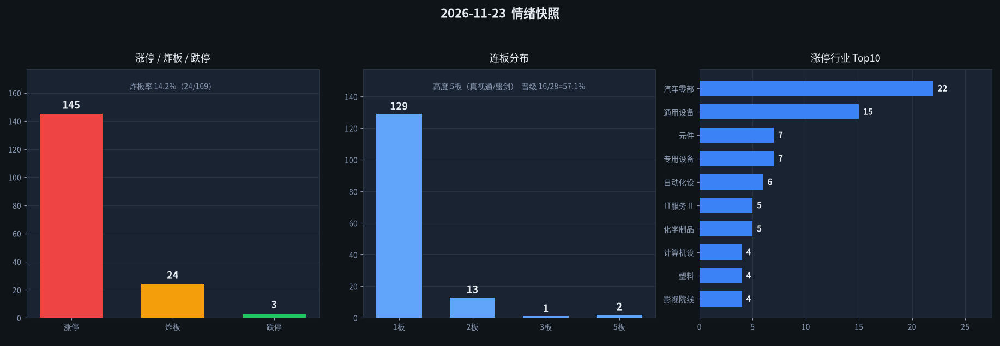

交易日 2026-11-23（周一） · 目标交易日 2026-11-24（周二） · 修复偏强·主线未成形
情绪：修复 涨停 145 · 跌停 3 炸板率 14.2% · 晋级率 57.1% · 高度 5板| 票 | 昨动作 | 今收盘涨跌幅 | 判定 |
|---|---|---|---|
| 全市场 | 空仓观望 | 中证1000 +2.90%（低开−1.51%后翻红），红盘约5.2%→84.8%，跌停58→3，晋级13.0%→57.1% | 错 |
| 算力PCB | 只观察/不加 | 中京一字开收3板但炸6、额25.87亿；沪电+2.96%、深南−0.90%、景旺+6.84%中军未封；超声+7.46%未封 | 对 |
| 家电/九阳 | 不加 | 九阳高开+1.21%、09:44封、炸0，额25.19亿涨停；小熊−0.33%、爱仕达+0.98%、海立+3.91%簇仍不齐 | 部分对 |
| 高度/反复 | 不加 | 盛剑低开−0.97%晋级5板额8.08炸0；真视通高开晋级5板额18.52炸6；华东重机高开+6.22%收首板 | 对 |
| 跌停 | 不抄 | 跌停58→3；昨跌停有反抽（文投+4.01%、阳光+6.01%）但不是干净反包主线 | 对 |
一句话：空仓默认错了——错过低开后的系统性修复；九阳不加部分对（簇仍不齐，但错过了当日最早的大额干净首板）；不追中京一字、不接力小额/脏高度、不抄跌停这三条仍对。
改进（未回测）：近冰点后的下一交易日，若竞价未触发「大量低开＞5%」，开盘后跌停迅速收敛、红盘快速转强，就把「全天空仓」改成「极轻试错」，优先早盘干净大额首板，不必等中军封板才允许动手。
偏强，主线尚未干净成形。
涨停 145（周五28大幅扩容），跌停东财池 3（周五58骤收到个位数；其中3连跌1家、2连跌1家），晋级率 57.1%（16/28，周五13.0%大幅抬升，但质量参差），炸板率 14.2%（24/169，周五20.0%略降），红盘约 84.8%（东财涨跌分布：上涨4562 / 下跌700 / 平盘117；较周五约5.2%大幅修复）。指数低开高走（上证开−0.86%收 +0.15%、创业板 +3.08%、中证1000 +2.90%，科创50 −0.26%仍略弱），两市放量约1307亿至约15529亿——是回流放量，不是下跌放量。涨停池成交额约1069亿，跌停池约2亿，涨停额大幅反超。连板高度回到 5板（真视通脏回封、盛剑额偏小），另有中京电子3板但炸6，撑不起空间龙。定性是 修复（偏强）：不是退潮（广度、跌停、晋级同步翻好），也先不标成启动（早盘干净大额首板很少，汽车零部只是数量堆、中军偏晚，高度质量差）。默认从空仓改为极轻试错，不追高开，不接力5板，不抄跌停。
今日为修复，不满足「高潮/退潮 + 跌停扩散 / 炸板率飙升 / 主线资金撤出」的加推条件，不写情绪→路线2风险过滤句。
| 指标 | 数值 | 备注 |
|---|---|---|
| 涨停家数 | 145 | 已剔 ST / 北交所；东财涨停池 raw146→clean145（剔北交所捷众科技920690） |
| 跌停家数 | 3 | 东财跌停池 raw3=clean3（无需再剔）；较周五58骤收。3连跌1家（华达科技一字），2连跌1家（正川股份），另彩蝶实业开板27次终跌停 |
| 炸板家数 | 24 | 炸板池 clean24（raw24=clean24） |
| 炸板率 | 14.2% | 炸板/(涨停+炸板)=24/169；较周五20.0%略降 |
| 连板高度 | 5板 | 真视通（IT服务Ⅱ，09:25封后炸6、14:54回封，额18.52亿、换手60%）、盛剑科技（环保设备，13:03封、炸0，额8.08亿）——一脏一小额，不当空间龙 |
| 连板结构 | 5板 2 / 3板 1 / 2板 13 / 1板 129 | 3板只有中京电子（元件，一字开后炸6、11:07回封，额25.87亿），偏脏 |
| 昨日涨停数 | 28 | 晋级分母用周五官方清洁池28。东财 previous 池 raw28=clean28，与之一致 |
| 晋级数 / 晋级率 | 16 / 57.1% | 口径：周五清洁池∩今日涨停池（16/28）。晋级含真视通/盛剑5板、中京3板及13只2板；其中干净偏少，脏的不少（中京炸6、真视通炸6、东方海洋炸13、冰山冷热炸4、大东方炸6）。另国光股份炸板未晋级，无昨日涨停直接跌停 |
| 高度/主线样本 | — | 高度5板质量差；汽车零部22家数量最多但中军拓普午后才封；元件3板脏、PCB中军未封；九阳是早盘唯一像样的大额干净首板，簇不齐。广度已修复，结构还不是启动 |
| 两市成交额 | 约 15529亿 | 新浪：上证≈7385.0 + 深成≈8143.8（周五约14222↑，放量约1307；回流放量）。东财指数接口本次502，点位与成交额用新浪 |
| 涨停池成交额合计 | 约 1069亿 | 仅涨停标的（周五约200大幅增加；最大额宇树科技46.77亿属午后20cm首板）；跌停池约2亿，涨停额大幅反超 |
| 红盘占比 | 约 84.8% | 东财涨停专题涨跌分布已更新（qdate=20261123）：上涨4562 / 下跌700 / 平盘117（4562/5379=84.81%）。乐咕已更新（2026-11-23 15:00）：上涨4306 / 下跌780 / 平盘127（4306/5213=82.60%），活跃度82.43%；乐咕涨停151/真实144、跌停7/真实2，与东财池145/3口径不完全一致，已注明 |

附图：涨停 / 炸板 / 跌停 + 连板分布 + 行业集中。
读表一句话：跌停收到3、红盘回到约85%、晋级57%，广度已经从近冰点翻成修复；但高度质量差、早盘干净大额首板很少、钱散在汽车零部的数量堆里，还不是启动。
周末稳市组合拳之后，周一是低开高走的修复：红盘从约5%拉到约85%，跌停从58收到3，涨停从28扩到145，涨停池额约1069亿反超跌停池约2亿。钱回来了，但辨识不够——汽车零部22家数量最多，高度却只有两只质量差的2板，中军拓普午后才封；10点前干净首板只有6只，大额的几乎只有九阳；高度回到5板，真视通炸6、盛剑额偏小。先记修复，不升级成启动。
22家涨停、额合计约150亿，是今日涨停集中度最高的题材。中军：拓普集团平开 +0.81%，13:21封、炸 1 立即回封，收 +10.00%，额 27.61亿——午后中军首板，略脏。跟风里襄阳轴承14:30封、炸0、额24.48亿偏晚；新泉股份高开+2.69%收涨停、额11.60亿、炸2；浙江世宝炸4、14:52才回封，偏脏；双环传动14:00封后炸板，收 +9.37% 未封死。2板只有长华集团（额2.16亿、炸2）和克来机电（额0.37亿、一字小额），都不当空间龙。辨识：数量龙，不是趋势龙/空间龙。
九阳股份高开 +1.21%，09:44封、炸 0，收 +10.01%，额 25.19亿——10点前唯一像样的大额干净首板。但小熊收 −0.33%、爱仕达 +0.98%、长虹美菱 −1.16%，海立只 +3.91%，簇没有同步。九阳可记为修复样本，不是家电主线。
中京电子一字开、炸 6 才回封3板，额25.87亿——不当空间龙。东晶电子2板也炸4。散首板有风华高科（14:08封、额23.18亿）、崇达技术（炸1、额18.65亿）、世运电路、奥士康、移远通信（13:17封、额18.42亿）。中军仍未封：沪电 +2.96%、深南 −0.90%、景旺 +6.84%；算力里旭创 +6.10%、新易盛 +9.92% 接近但未封，天孚 +13.82%（20cm）也不是主板封板簇。半导体里 瑞芯微低开 −2.03%、11:07干净封、炸0，额 36.55亿，质量好，但是孤立中军首板，先只观察、不追。
真视通5板炸6、额18.52亿、换手60%，脏回封，不当空间龙。盛剑5板炸0但额仅8.08亿，偏小。冰山冷热2板额28.89亿却炸4、14:51才回封；东方海洋炸13；大东方炸6；华东重机高开 +6.22% 收首板，不追次日。宇树科技（688836）低开−1.36%、13:44封20cm、额 46.77亿，是今日最大额涨停，但属于午后脉冲，不当明日追高目标。
华达科技一字3连跌（汽车零部里的反向个股）、正川股份2连跌、彩蝶实业开板27次终跌停。跌停额仅约2亿，不构成扩散，也不构成抄底理由。
情绪 = 修复（偏强，主线未干净成形） → 专项总仓建议 ≤8%（极轻试错，未回测）；同时持仓建议 0–1 只；不追高开＞3%或一字，不接力5板，不追中京3板脏回封，不抄跌停。
| 标的 | 首选 601689 拓普集团（中军首板）；跟风只记观察：000678 襄阳轴承、603179 新泉股份。排除浙江世宝（炸4）、长华集团/克来机电（小额或脏2板）、双环传动（炸板未封死） |
|---|---|
| 动作 | 条件开多（默认只观察；仅拓普满足进场才开，不追板） |
| 进场 | 拓普竞价平开～小高开 ＜3% 且未一字，开后能守住或回封干净、同向有跟风未炸扩散 → 极轻开多。低开＞3%且快速砸、或高开＞3%/一字 → 不加。不打前排、不追回封已经大幅转强后的高位。 |
| 止损 | 开板不回封，或板块中军走弱、跟风炸板扩散 → 走 |
| 目标 | 看能否带出「中军+跟风」的启动迹象，不预支主升 |
| 仓位 | 单票 ≤8%（未回测）；同时只做这一个方向 |
| 原因 | 汽车零部是今日数量最集中的题材，但中军来得晚、高度质量差，只能极轻试错，不能当已确认主线。 |
| 作废 | 拓普高开＞3%或一字直接放弃；竞价同板块多数低开＞3%；开盘后跟风大面积炸板；跌停重新走扩。 |
| 标的 | 002242 九阳股份；600619 海立股份只记中军观察；小熊/爱仕达/长虹美菱/北鼎/华帝不纳入开仓候选 |
|---|---|
| 动作 | 只观察 / 默认不加 |
| 进场 | 无开仓。不追九阳高开＞3%或一字。即使低开回封，也要等海立等中军同步转强才允许把观察升为极轻（否则维持不加，未回测）。与指令1合计仍 ≤8%、只持 0–1 只。 |
| 仓位 | 默认 0%（未回测） |
| 原因 | 九阳是今日最早的大额干净首板，但家电簇仍不齐，不能把单票修复当成板块启动。 |
| 作废 | —（升级条件见上，未回测） |
| 标的 | 603893 瑞芯微；002579 中京电子、000823 超声电子、002463 沪电股份、002916 深南电路、603228 景旺电子；风华高科/崇达技术/世运电路/移远通信只记散首板观察 |
|---|---|
| 动作 | 只观察 / 不加（不追瑞芯微高开，不接力中京3板，不把散首板当主仓） |
| 进场 | 无开仓。记录瑞芯微竞价强弱与是否回封，以及沪电/深南/景旺、旭创/新易盛是否同步封板。 |
| 仓位 | 0%（未回测） |
| 原因 | 瑞芯微质量好但是孤立中军首板；中京炸6不当空间龙；PCB/算力中军今日仍未封。 |
| 作废 | — |
| 标的 | 002771 真视通、603324 盛剑科技、002579 中京电子；000530 冰山冷热、002086 东方海洋、600327 大东方；002685 华东重机；688836 宇树科技 |
|---|---|
| 动作 | 不加（不接力5板，不追中京/冰山脏回封，不追宇树次日高开或一字，不接华东重机高开首板） |
| 仓位 | 0% |
| 原因 | 真视通炸6、盛剑额小，都不是空间龙；宇树虽是今日最大额涨停，但是午后20cm脉冲，次日最容易被追高。 |
| 标的 | 603358 华达科技、603976 正川股份、603073 彩蝶实业 |
|---|---|
| 动作 | 不加 / 不抄底 |
| 仓位 | 0% |
| 原因 | 跌停已收到3家，属于残留个股，不是跌停池反包信号。 |